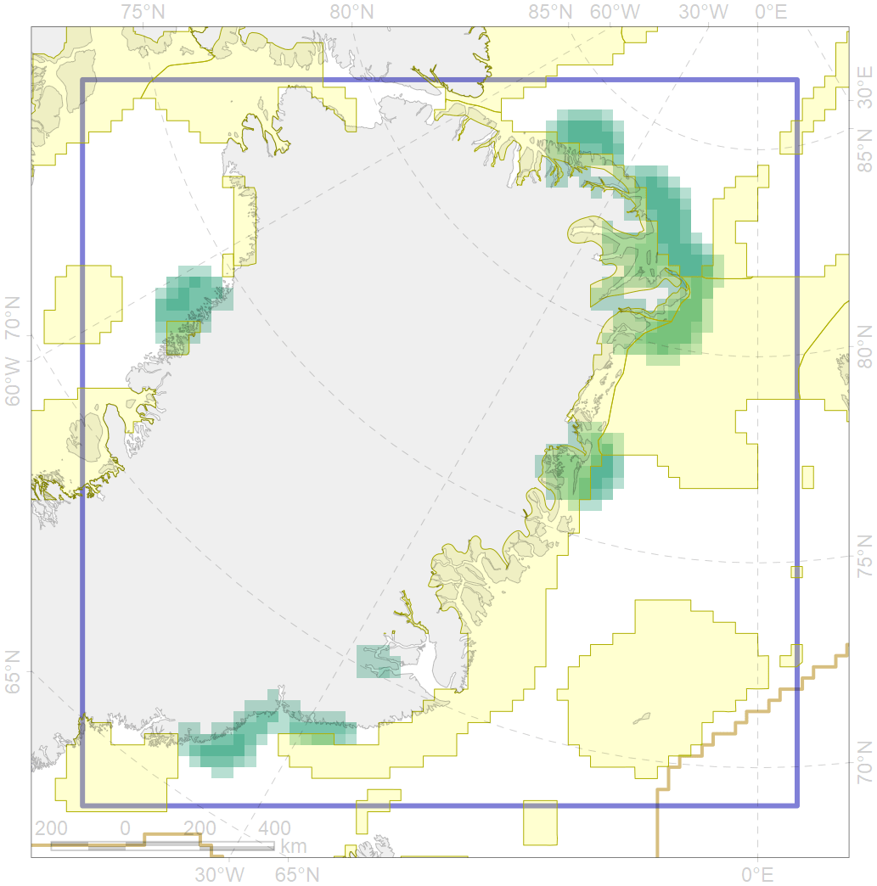
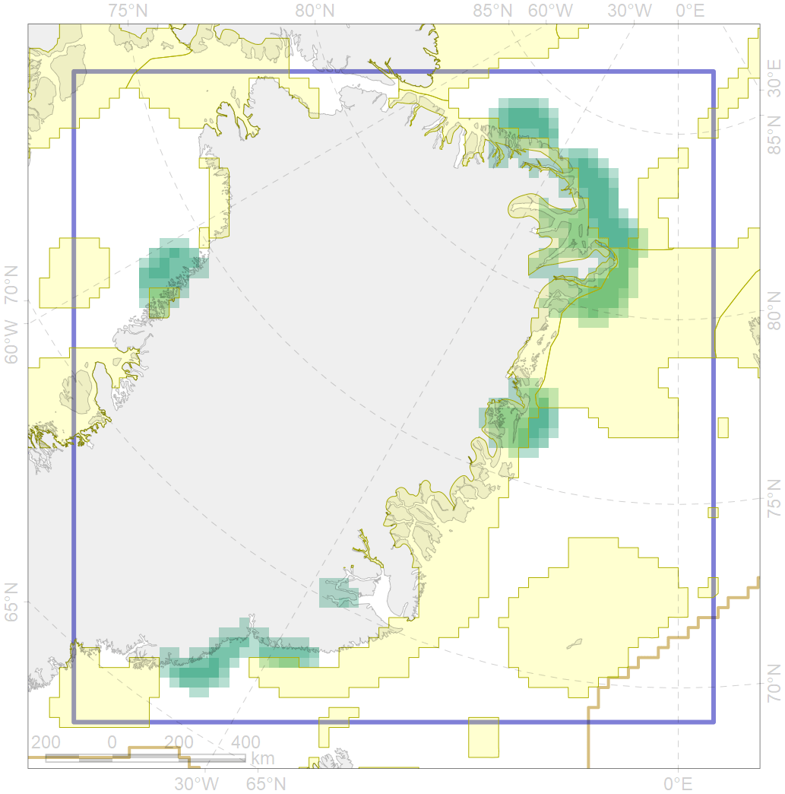

6095
 

| CF ID | 6095 |
| CF Name | Ivory gull (Pagophila eburnea) East Greenland breeding colonies buffer feeding area |
| Time Period | 1990-2016 |
| Source(s) | Gilg et al 2009 |
| Seasonality | April-September |
| Depth Horizon | 0 m |
| Methodology | Buffer around colonies |
| Author Name | Gavrilo, Tertitski |
| Notes | |
| Conservation Target Set in the Scenario | 0.432 |
| Conservation Target Achieved in the Scenario | 0.443 (Scenario: 102.6%) |
| PAC ID | Proportion in the PAC | Contribution to ArcNet Target Achievement | PAC’s Contribution to the Achieved Target |
|---|---|---|---|
| 28 | 0.6% | 1.1% | 1.0% |
| 29 | 14.2% | 32.3% | 31.5% |
| 32 | 12.2% | 26.2% | 25.5% |
| 33 | 14.2% | 32.8% | 32.0% |
| 48 | 2.0% | 3.3% | 3.2% |
| inner | 43.1% | 95.7% | 93.3% |
| outer | 56.9% | 6.9% | 6.7% |